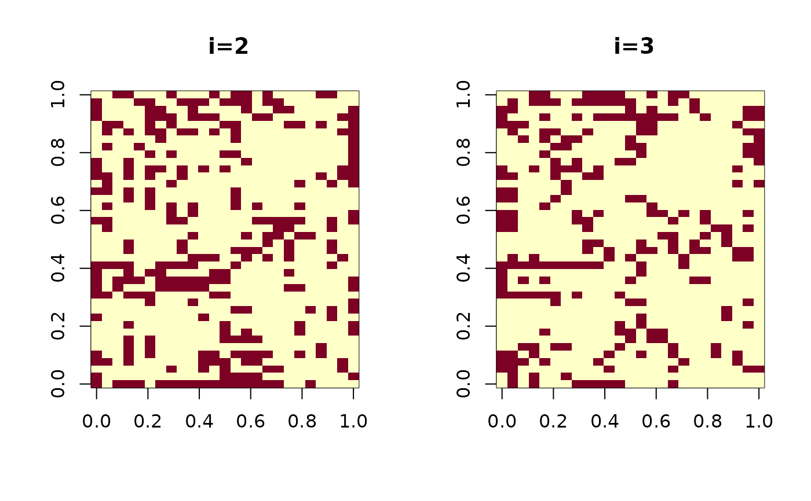
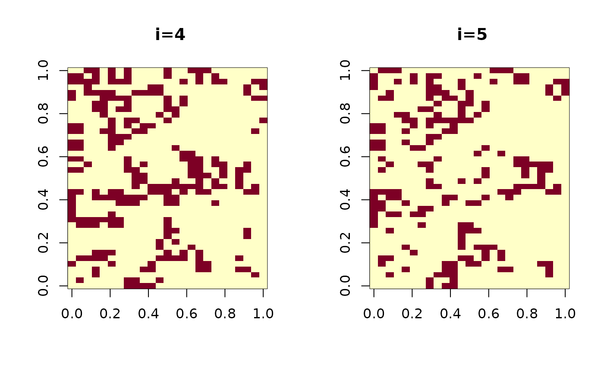
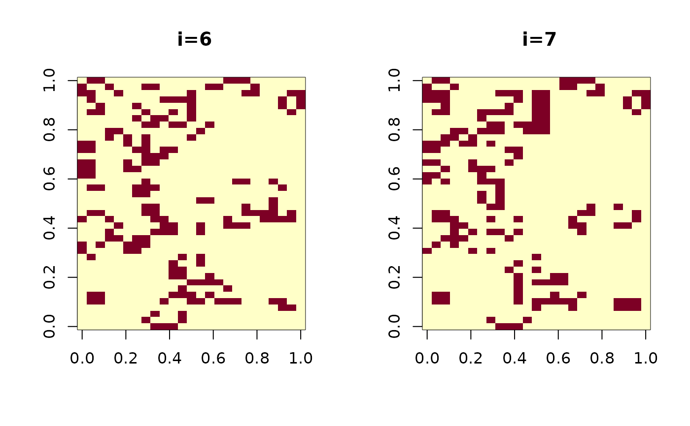
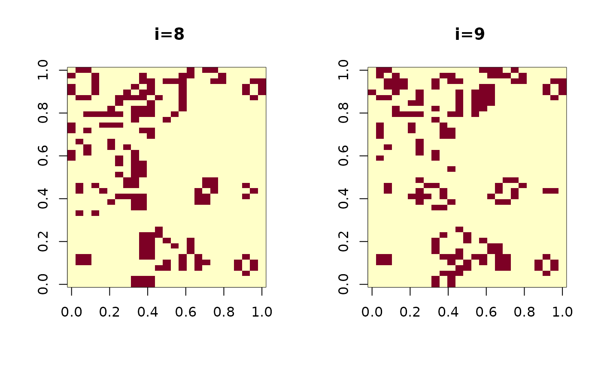
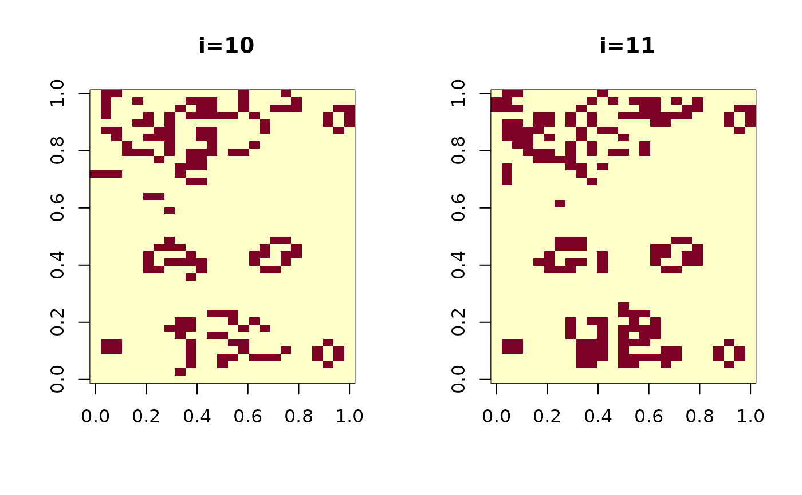
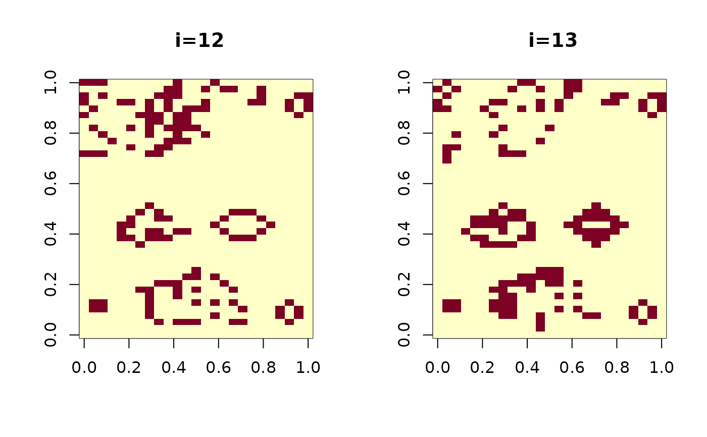
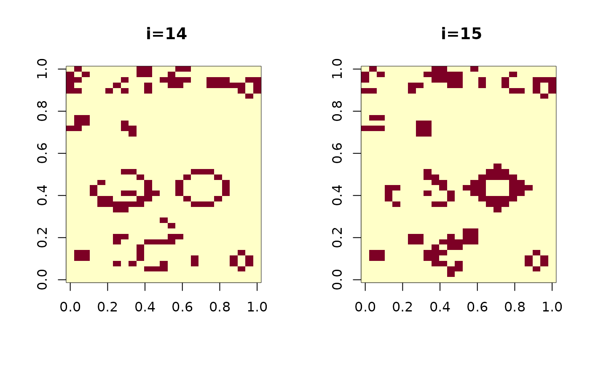
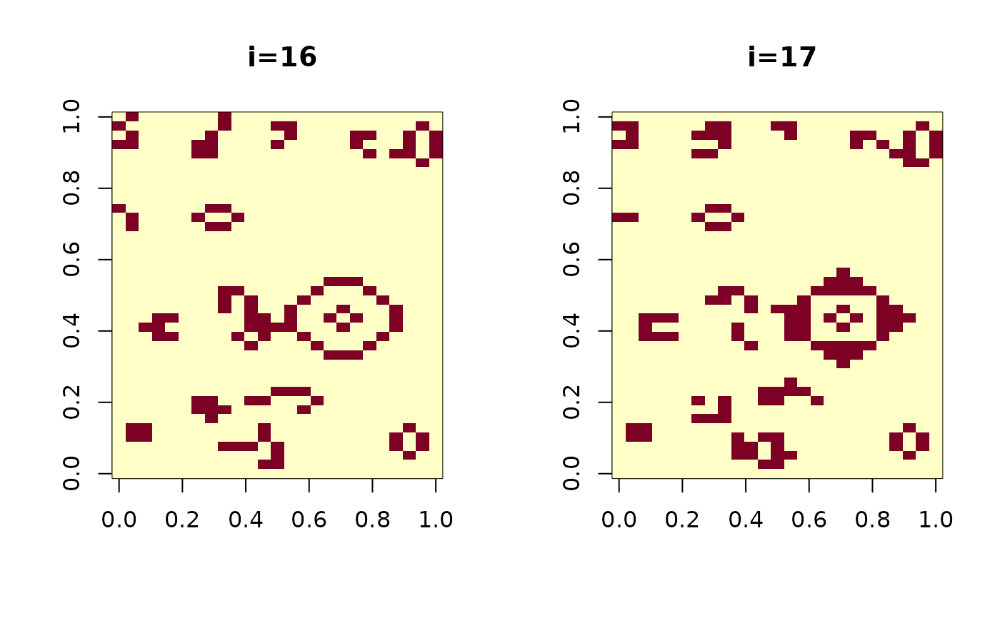

Generating-functions (Constructors) to Create Objects of Classes `odeModel', `rwalkModel' and `gridModel'.
odeModel.RdThese functions can be used to create simObj instances without
using new explicitly.
Usage
odeModel(obj = NULL, main = NULL,
equations = NULL, times = c(from = 0, to = 10, by = 1),
init = numeric(0), parms = numeric(0),
inputs = NULL, solver = "rk4", initfunc = NULL)
gridModel(obj = NULL, main = NULL,
equations = NULL, times = c(from=0, to=10, by=1),
init = matrix(0), parms = list(),
inputs = NULL, solver = "iteration", initfunc = NULL)
rwalkModel(obj = NULL, main = NULL,
equations = NULL, times = c(from = 0, to = 10, by = 1),
init = NULL, parms = list(),
inputs = NULL, solver = "iteration", initfunc = NULL)
indbasedModel(obj = NULL, main = NULL,
equations = NULL, times = c(from = 0, to = 10, by = 1),
init = NULL, parms = list(),
inputs = NULL, solver = "iteration", initfunc = NULL)Arguments
- obj
Unnamed arguments are regarded as objects of the corresponding class. If
objis omitted, the new object is created from scratch.- main
The main equations of the model.
- equations
The sub-models (sub-equations and of the model).
- times
A vector of time steps or a vector with three named values
from,to,byspecifying the simulation time steps. The `from-to-by' form can be edited witheditParms.- init
Initial values (start values) of the state variable given as named vector.
- parms
A vector or list (depending on the respective class) of constant parameters.
- inputs
Optional time-dependend input variables (matrix or data frame).
- solver
The solver used to integrate the model.
- initfunc
The function is called by the
initializemechanism and allows direct access and manipulation of all slots of the object in creation
Details
These functions provide an alternative way to create
simObj instances in addition to the standard S4 new
mechanism. The functions are provided mainly for compatibility with older
versions of simecol.
See simecol-package and the examples for details about the
slots.
Examples
## (1) Define and run your own simecol model with new ==================
lv <- new("odeModel",
main = function (time, init, parms) {
with(as.list(c(init, parms)), {
dn1 <- k1 * N1 - k2 * N1 * N2
dn2 <- - k3 * N2 + k2 * N1 * N2
list(c(dn1, dn2))
})
},
parms = c(k1 = 0.2, k2 = 0.2, k3 = 0.2),
times = c(from = 0, to = 100, by = 0.5),
init = c(N1 = 0.5, N2 = 1),
solver = "lsoda"
)
## ... or use the generating function ----------------------------------
lv <- odeModel(
main = function (time, init, parms) {
with(as.list(c(init, parms)), {
dn1 <- k1 * N1 - k2 * N1 * N2
dn2 <- - k3 * N2 + k2 * N1 * N2
list(c(dn1, dn2))
})
},
parms = c(k1 = 0.2, k2 = 0.2, k3 = 0.2),
times = c(from = 0, to = 100, by = 0.5),
init = c(N1 = 0.5, N2 = 1),
solver = "lsoda"
)
lv <- sim(lv)
plot(lv)
 ## (2) Conway's Game of Life ==========================================
set.seed(23) # to make it reproducible
conway <- new("gridModel",
main = function(time, x, parms) {
nb <- eightneighbours(x)
surviv <- (x > 0 & (nb %in% parms$srv))
gener <- (x == 0 & (nb %in% parms$gen))
x <- (surviv + gener) > 0
return(x)
},
parms = list(srv = c(2, 3), gen = 3),
times = 1:17,
init = matrix(round(runif(1000)), ncol=40),
solver = "iteration"
)
sim(conway, animate=TRUE)
## (2) Conway's Game of Life ==========================================
set.seed(23) # to make it reproducible
conway <- new("gridModel",
main = function(time, x, parms) {
nb <- eightneighbours(x)
surviv <- (x > 0 & (nb %in% parms$srv))
gener <- (x == 0 & (nb %in% parms$gen))
x <- (surviv + gener) > 0
return(x)
},
parms = list(srv = c(2, 3), gen = 3),
times = 1:17,
init = matrix(round(runif(1000)), ncol=40),
solver = "iteration"
)
sim(conway, animate=TRUE)







